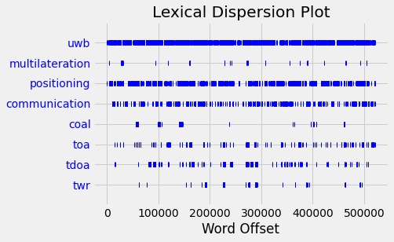

24. Ultra Wide Band positioning literature analysis#
The real case for analyzing UWB indoor positioning system literature
115 journal articles from years 2019-2021 matching search terms “UWB positioning” were downloaded from IEEE explorer as PDF and converted to plain text using pdftotext in linux.
# Standard libraries to be used
import glob
import matplotlib.pyplot as plt
import numpy as np
plt.style.use('fivethirtyeight')
# A regular experssion library. This is very usefull for text processing
import re
# Import the NLTK library
import nltk
from nltk.stem import SnowballStemmer, WordNetLemmatizer
from nltk.tokenize import word_tokenize, sent_tokenize
from nltk.corpus import PlaintextCorpusReader
from nltk.corpus import stopwords
from nltk import FreqDist
import gensim
from gensim import corpora
import pyLDAvis
from pyLDAvis import gensim_models
---------------------------------------------------------------------------
ModuleNotFoundError Traceback (most recent call last)
Cell In[1], line 11
8 import re
10 # Import the NLTK library
---> 11 import nltk
12 from nltk.stem import SnowballStemmer, WordNetLemmatizer
13 from nltk.tokenize import word_tokenize, sent_tokenize
ModuleNotFoundError: No module named 'nltk'
24.1. Import corpus#
lemmatizer = WordNetLemmatizer()
#stop_words_fin = set(stopwords.words("finnish"))
stop_words = set(stopwords.words("english"))
# A real case, 115 recent research journal articles about "UWB positioning" from IEEE Explorer
# Bulk downloaded PDF's and converted to text with pdftotext
filenames=[fn.split('/')[-1] for fn in glob.glob('corpus_txt/*.txt')]
uwb=PlaintextCorpusReader('corpus_txt/', filenames)
punctuations=set([',','.','!','?','@', '%', ':', ';'])
morewords=set(['ieee', 'transaction', 'journal', 'vol'])
unnecessary=stop_words.union(punctuations).union(morewords)
docs=[]
words=[]
for document in uwb.fileids():
tokens = gensim.utils.simple_preprocess(uwb.raw(document))
meaningful_words = [word for word in tokens if word not in unnecessary]
lemmatized = [lemmatizer.lemmatize(word) for word in meaningful_words]
docs.append(lemmatized)
words.extend(lemmatized)
print(len(docs))
for i in range(5):
print(i, docs[i][:10])
115
0 ['transaction', 'geoscience', 'remote', 'sensing', 'february', 'sar', 'processing', 'without', 'motion', 'measurement']
1 ['sensor', 'august', 'high', 'accuracy', 'indoor', 'localization', 'system', 'application', 'based', 'tightly']
2 ['transaction', 'cybernetics', 'june', 'ultra', 'wideband', 'odometry', 'based', 'cooperative', 'relative', 'localization']
3 ['microwave', 'wireless', 'component', 'letter', 'november', 'ir', 'uwb', 'angle', 'arrival', 'sensor']
4 ['antenna', 'wireless', 'propagation', 'letter', 'march', 'position', 'information', 'indexed', 'classifier', 'improved']
text = nltk.Text(words)
dictionary = corpora.Dictionary(docs)
text.concordance('csi')
Displaying 25 of 48 matches:
ation using interpolated preprocessed csi phase bayesian tracking sensor may sh
rcher using channel state information csi rtt wi fi angle arrival aoa ble promo
communication exploiting statistical csi trans veh technol pp aug huang zappon
ient like dementia technique like gps csi mobile application video image proces
ystem using channel state information csi contains line phase training line pha
tomat icra may pp wang gao mao pandey csi based fingerprinting indoor localizat
pectively co sin bi di sin co asi bsi csi dsi co si sin abcd matrix analysis fi
wu pila sub meter localization using csi commodity wi fi device sensor oct lop
on ii discus different technique rssi csi aoa tof tdoa rtof poa localization se
x algorithm channel state information csi many wireless system uwb coherence ba
upper layer channel state information csi higher granularity r capture amplitud
smitter receiver antenna pair general csi complex quantity written polar form f
ngerprint feature collected form rssi csi number algorithm available used match
ngerprinting method using online rssi csi measurement map user device position
ocalization accuracy aforementioned r csi tof aoa technique combination hybrid
quency kotaru et al propose spotfi us csi rssi obtain accurate estimate aoa tof
oa signal across various antenna also csi across different wifi sub carrier due
oa tof estimation algorithm employing csi information system attains high accur
l proposed deep learning based indoor csi fingerprinting system author use line
incurs additional cost et al propose csi based localization system ble technol
since nature ble make challenging use csi author proposed ble compatible algori
alization technique aoa tof rtof rssi csi etc technology wifi uwb visible light
lege london london yang zhou liu rssi csi indoor localization via channel respo
le comput netw pp wang gao mao pandey csi based fingerprinting indoor localizat
commun iscc pp vasisht bharadia bloc csi based accurate localization ble tag p
text.dispersion_plot(['uwb', 'multilateration', 'positioning', 'communication', 'coal', 'toa', 'tdoa', 'twr'])

corpus = [dictionary.doc2bow(doc) for doc in docs]
print('Number of unique tokens: %d' % len(dictionary))
print('Number of documents: %d' % len(corpus))
corpus[1][:5]
Number of unique tokens: 20396
Number of documents: 115
[(3, 1), (6, 1), (7, 1), (9, 32), (10, 5)]
temp = dictionary[0]
# Latent Dirichlet Allocation
id2word = dictionary.id2token
lda_model = gensim.models.ldamodel.LdaModel(corpus=corpus,
id2word=id2word,
num_topics=5,
random_state=100,
update_every=1,
chunksize=2000,
passes=10,
alpha='auto',
eta = 'auto',
iterations=100,
eval_every=1)
pyLDAvis.enable_notebook()
vis = gensim_models.prepare(lda_model, corpus, dictionary);
/home/petri/venv/python3/lib/python3.9/site-packages/pyLDAvis/_prepare.py:246: FutureWarning: In a future version of pandas all arguments of DataFrame.drop except for the argument 'labels' will be keyword-only
default_term_info = default_term_info.sort_values(
vis
24.2. Features and clustering#
The document is first transformed to the feature space using TFIDF transformation
Then a Kmeans clustering is used for finding topic clusters from corpus
Kmeans i good choice for classification when the amount of samples and features is large, since kMeans is simple and fast.
TFIDF=Term Frequency vs Inverse Document Frequency
from gensim.models import TfidfModel
from gensim.corpora import Dictionary
uwbdictionary = Dictionary(docs)
tfidf_model = TfidfModel(dictionary=uwbdictionary)
# Transformed corpus
tform_corpus = tfidf_model[corpus]
# Create sparse matrix (sparse form of the design matrix)
sparse = gensim.matutils.corpus2csc(tform_corpus)
# Make it to normal matrix (Dense desigh matrix)
X = sparse.toarray().transpose()
X.shape
(115, 20396)
# Which words are used by the first and the 50th doc in corpus
plt.plot(X[[1,50],:].T)
[<matplotlib.lines.Line2D at 0x7fb7fa8a35b0>,
<matplotlib.lines.Line2D at 0x7fb7fa8a35e0>]
# Show the frequency of using the word accelerate in different documents
print(dictionary[4])
plt.plot(X[:,4])
accelerate
[<matplotlib.lines.Line2D at 0x7fb7fa5e6940>]
24.2.1. Kmeans clustering#
from sklearn.cluster import KMeans
kmodel = KMeans(n_clusters=10)
kmodel.fit(X)
clusters = kmodel.labels_.tolist()
centroids = kmodel.cluster_centers_.argsort()[:, ::-1] # Sort the words according to their importance.
for i in range(10):
j=i+1
print("Cluster %d words:" % j, end='')
for ind in centroids[i, :10]:
print(' %s' % dictionary.id2token[ind],end=',')
print()
Cluster 1 words: rha, body, anc, particle, qlos, shadowing, chest, nlos, aembpf, pf,
Cluster 2 words: in, pedestrian, imu, nlos, gnss, b, station, ij, vehicle, skf,
Cluster 3 words: classification, classifier, radar, character, wandering, ghost, rsnrtf, dementia, target, doppler,
Cluster 4 words: pdoa, pulse, tdc, tag, agv, lte, rx, transmitter, rfid, agvs,
Cluster 5 words: στ, b, pl, link, limb, body, wearable, sl, activity, breathing,
Cluster 6 words: cnn, lstm, cir, deeptal, gru, dln, mwt, nlos, layer, convolutional,
Cluster 7 words: twr, agent, clock, altds, parent, packet, node, tdoa, throughput, uncalibrated,
Cluster 8 words: array, antenna, slot, vivaldi, gm, cp, polarization, tsa, reflector, uhf,
Cluster 9 words: pdr, anchor, nlos, capsule, heading, ape, acceleration, ipda, usv, dropout,
Cluster 10 words: shearer, gmm, coal, robot, imm, anchor, ian, mine, wca, vio,
# Find the membership of a certain article
docid=4
print("Cluster %d, filename: %s" %(clusters[docid], filenames[docid]))
Cluster 2, filename: Position-Information-Indexed Classifier for Improved Through-Wall Detection and Classification of Human Activities Using UWB Bio-Radar.txt
24.3. Latent Semantic Indexing#
Another method of getting topics is the Latent Semantic Indexing
## Latent Semantic Indexing
from gensim.test.utils import common_dictionary, common_corpus
from gensim.models import LsiModel
n_topics=10
lsi = LsiModel(corpus=corpus, id2word=uwbdictionary.id2token, num_topics=n_topics)
# What words defines a topic?
lsi.show_topic(1)
[('localization', 0.4875349148913273),
('positioning', -0.2909763458811148),
('uwb', -0.2575512667618097),
('user', 0.24188446635670657),
('error', -0.23932395156138705),
('device', 0.2275846558138512),
('system', 0.15292815029909418),
('location', 0.13571514203962662),
('iot', 0.1332547423389989),
('indoor', 0.12787555538465106)]
topicno=0
v=np.array(lsi.show_topic(topicno))
plt.bar(x=v[:,0], height=v[:,1], )
plt.xticks(rotation=90);
# Check the membership of an article to the topics
lsi[corpus[2]]
[(0, -163.16463814559444),
(1, -25.30867785526491),
(2, -19.632380405044618),
(3, -83.97862682677317),
(4, -16.21218983355262),
(5, 11.791163084369556),
(6, 25.61561916998633),
(7, -0.2888894864496113),
(8, 2.5825827845733342),
(9, 54.64331262974893)]
# Find the most probable membership of all articles
N=115
v=np.zeros(N)
c=np.zeros(N)
for i in range(N):
x=np.array(lsi[corpus[i]])[:,1]
j=x.argmax()
v[i]=j
c[i]=x[j]
plt.scatter(range(N),v,c=c)
plt.colorbar()
<matplotlib.colorbar.Colorbar at 0x7fb7f05f9f70>
# Find documents which highest membership probability = good examples of topics
for i in range(len(filenames)):
if c[i]>125:
print(i, v[i], c[i], filenames[i])
10 5.0 144.3401299127132 PDR-UWB Based Positioning of a Shopping Cart.txt
17 9.0 187.91504111738914 Anchor Calibration for Real-Time-Measurement Localization Systems.txt
41 9.0 126.9637637961244 Peer-to-Peer Relative Localization of Aerial Robots With Ultrawideband Sensors.txt
50 2.0 130.15121261806388 Planar Ultra-Wideband and Wide-Scanning Dual-Polarized Phased Array With Integrated Coupled-Marchand Balun for High Polarization Isolation and Low Cross-Polarization.txt
60 2.0 149.78166430274806 Generalization of Channel Micro-Doppler Capacity Evaluation for Improved Finer-Grained Human Activity Classification Using MIMO UWB Radar.txt
61 2.0 131.55676936576754 UWB Simultaneous Breathing and Heart Rate Detections in Driving Scenario Using Multi-Feature Alignment Two-Layer EEMD Method.txt
76 8.0 163.7418920112681 Single-Anchor Positioning Multipath Processing With Non-Coherent Directional Measurements.txt
79 1.0 674.8681255660538 A Survey of Indoor Localization Systems and Technologies.txt
84 8.0 149.79169049795837 Multiple Targets Localization Behind L-Shaped Corner via UWB Radar.txt
90 2.0 130.11908327919298 Assessment of Limb Movement Activities Using Wearable Ultra-Wideband Technology.txt
95 2.0 167.42609310968123 Experimental Analysis of Ultra-Wideband Body-to-Body Communication Channel Characterization in an Indoor Environment.txt
96 4.0 134.61985693558125 Stochastic Data Association for Multipath Assisted Positioning Using a Single Transmitter.txt
114 7.0 209.75864215039607 BLAS Broadcast Relative Localization and Clock Synchronization for Dynamic Dense Multiagent Systems.txt
# Find samples from each topic, which has the highest membership probability = Best sample of each topic
print("Topic, Membership: filename=title")
idx=np.arange(len(v))
for i in range(1,n_topics):
j = idx[v==i]
if len(j)>0:
k = j[np.argmax(c[j])]
print("%2d, %3.0f: %s " % (i, c[k], filenames[k]))
else:
print(i)
Topic, Membership: filename=title
1, 675: A Survey of Indoor Localization Systems and Technologies.txt
2, 167: Experimental Analysis of Ultra-Wideband Body-to-Body Communication Channel Characterization in an Indoor Environment.txt
3, 101: Analysis of the Applicability of Dilution of Precision in the Base Station Configuration Optimization of Ultrawideband Indoor TDOA Positioning System.txt
4, 135: Stochastic Data Association for Multipath Assisted Positioning Using a Single Transmitter.txt
5, 144: PDR-UWB Based Positioning of a Shopping Cart.txt
6, 77: A Low-Cost INS and UWB Fusion Pedestrian Tracking System.txt
7, 210: BLAS Broadcast Relative Localization and Clock Synchronization for Dynamic Dense Multiagent Systems.txt
8, 164: Single-Anchor Positioning Multipath Processing With Non-Coherent Directional Measurements.txt
9, 188: Anchor Calibration for Real-Time-Measurement Localization Systems.txt